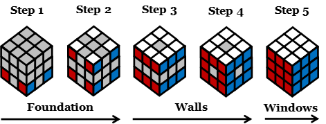

The 1980 Method Reborn
The Visual
Structural Method™
Structural Method™

An Intuitive Structure Based 3D Architectural Approach for Solving the 2×2 and 3×3 Cubes
Learn the cube through structure, visual rules, and a small number of visual pattern moves rather than relying on large collections of case-specific algorithms.
A visual structural learning system that helps learners recognize structure, follow visual patterns, and build the cube through Foundation → Walls → Windows.
An approach to cubing that relies on only three visual pattern moves. Learners simply follow a familiar route pattern, like driving a known path and returning home.
As you solve, the cube grows naturally step by step, much like building a small house. Each stage adds a new structural layer, making the cube easier to understand as it develops.

The cube is solved by progressively building a stable structure in three architectural stages: Foundation → Walls → Windows. Each movement protects the structure already built and guides the cube through clear, predictable visual states that learners can see and understand.
The Visual Structural Method combines two complementary solving approaches. Steps 1, 3, and 5 are rule-based steps that build, align, and protect the cube's structure. Steps 2 and 4 use visual pattern moves to make structural corrections while safely restoring completed structures.
Build the Bottom Frame and Top Frame. Together they form a stable foundation and central pillar that guide the rest of the solve.
Step 1: Bottom FrameBuild the first part of the foundation and establish the structural base of the cube.
Step 2: Top FrameComplete the foundation by building and aligning the Top Frame with the Bottom Frame.
Build and align the Top Wall, Bottom Wall, and Middle Wall while protecting the completed foundation and central pillar.
Step 3: Top Wall and Bottom WallBuild the first walls around the central pillar while protecting the completed foundation.
Step 4: Middle WallComplete the wall structure and prepare the cube for the final window alignment.
Complete the final window alignment while protecting the completed foundation and wall structure.
Step 5: Window AlignmentStep 5 uses the Center Rule together with the Step 3 Rule to align the remaining windows. Both rules preserve the completed structure while the final windows are brought into alignment.
The cube remains readable throughout the solve. By following the structure protection rules, learners can continue from new structural patterns instead of relying on blind repetition or restarting their progress.
The Visual Structural Method is designed for learning rather than speedcubing. It helps learners understand the cube as a structure rather than a collection of formulas, creating a calm and confidence-building learning experience.
This book presents the complete Visual Structural Method, a beginner-friendly approach that teaches cube solving through visible structures, recurring visual patterns, and guided progression rather than large collections of algorithms.
Designed as a self-contained learning resource, the book teaches every part of the method through detailed explanations, step-by-step diagrams, visual pattern guides, and structured practice activities. Learners can progress at their own pace without relying on external videos or online instruction.
Each step introduces a specific structural objective, allowing learners to build confidence before progressing further.
Large 3D diagrams, directional arrows, and visual pattern guides help learners understand how the cube develops.
Learners can focus on mastering individual stages without repeatedly restarting the entire solve.
First explored in 1980 and refined over many years into a structured educational method for modern learners.
The method follows a clear structural progression:
Foundation → Walls → Windows
As each stage is completed, the cube provides the structural cues needed for the next step. Learners always know what they are building, why they are building it, and what comes next.
Learn → Practice → Recognize → Master
Explore complete solving demonstrations based on real scrambles and follow the full learning progression using your own cube.
These examples provide a preview of the teaching approach used throughout the book and illustrate how the cube develops from scramble to solution through a clear structural progression.
An Amazon QR code for quick mobile scanning will be added here when the book is released.
The Visual Structural Method™ teaches the cube the same way a house is constructed: Foundation → Walls → Windows. Step by step, visually, and with complete structural clarity, it transforms the 2×2 and 3×3 cubes into structures you can see, understand, and confidently solve.
Instead of long formulas, you learn through clear patterns, simple rules and three gentle visual pattern moves. You see how corners form the permanent frame, how edges pair predictably, and how the cube rebuilds itself through stable and clear structural states. Every turn has purpose, nothing is random, and progress is never lost. Because the method is structural and visual, learners can follow a simpler and more predictable progression through the solve, and makes the entire solution easier to understand.
Created for children, parents, teachers, and all ages, this method replaces frustration with confidence. Whether you are learning for the first time or returning after years away, you will discover a calm and visual structural approach that makes the cube welcoming, logical, and beautifully understandable.
You will learn to: Understand the cube through clear visual patterns, build and protect the corner frame as the foundation, form Twin Edge Pairs with simple structural logic, reconstruct safely without losing progress, and solve the entire cube smoothly using only three visual pattern moves.
Teckel is an engineering leader and systems architect with deep experience in embedded systems, thermal imaging, and system level problem solving. He discovered the Visual Structural Method at age fourteen through pure observation and spatial intuition, without books or algorithms. His breakthrough came from one insight: the cube behaves like a house. Over the decades, he refined this discovery into a clear and accessible visual structural system that teaches the cube through architecture, visual logic, and intuitive understanding. Today, he shares this gentle, structural method with learners of all ages.